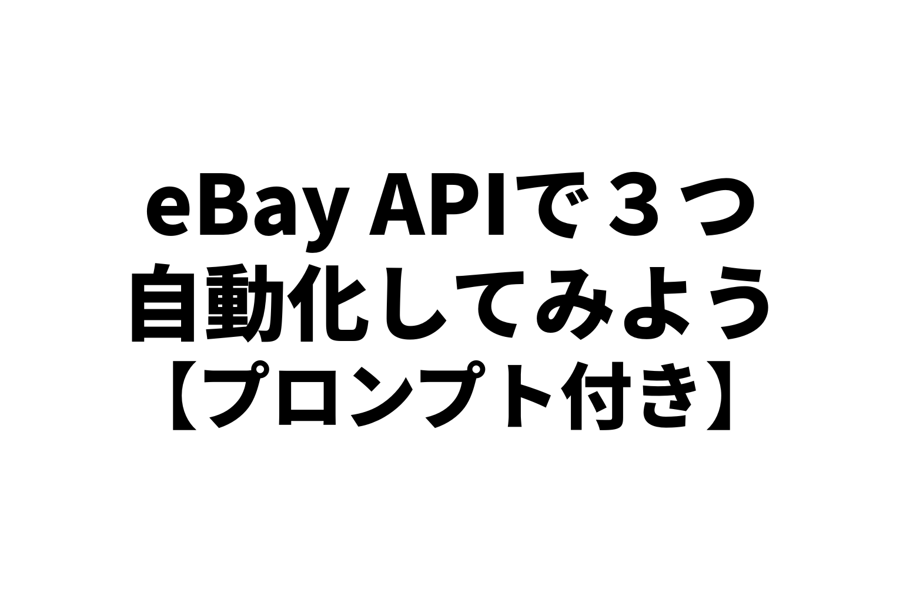
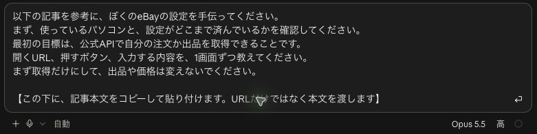
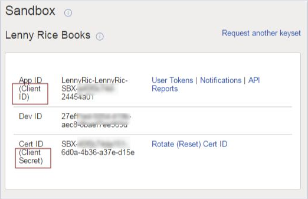
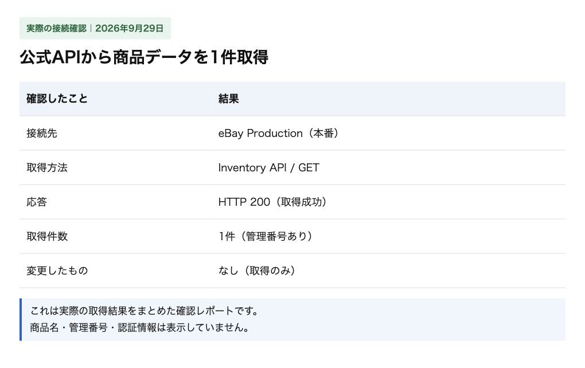
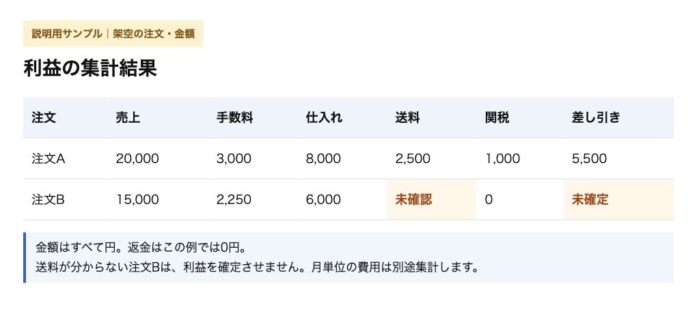
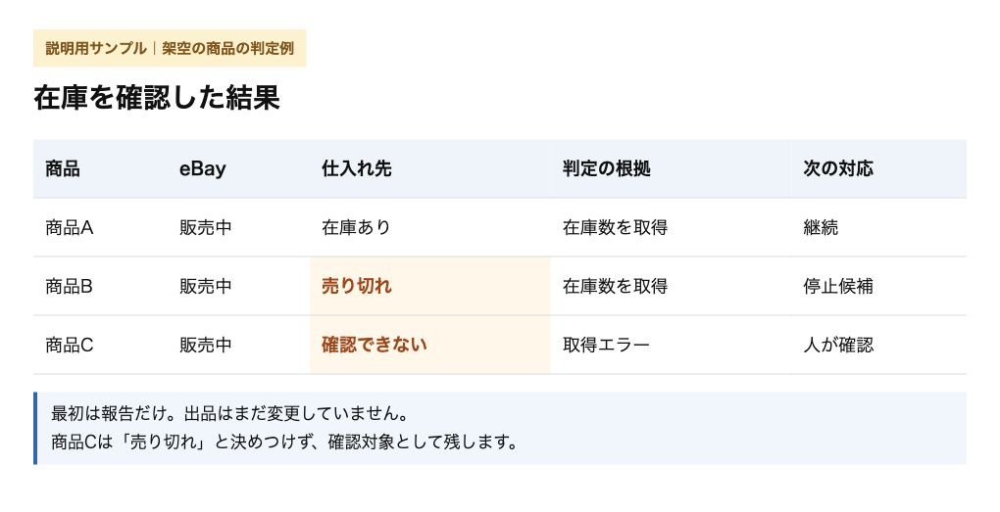
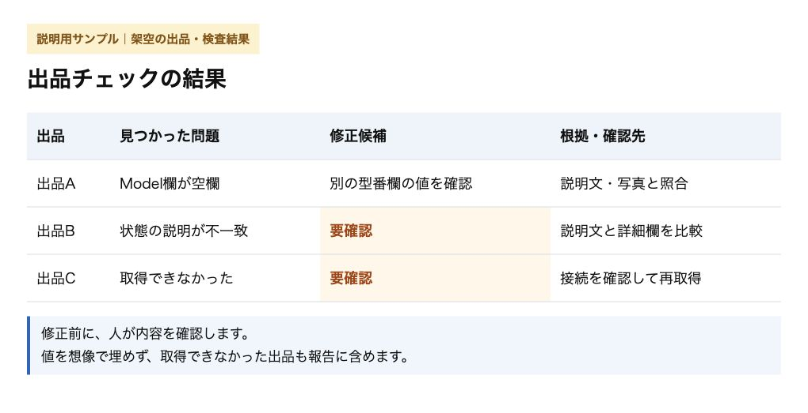

今回は、eBayが提供するAPIとAIを使って、業務を自動化する方法を書きます。
前回紹介した「APIでできること」を、自分の店で使ってみる実践編です。
APIへの接続手順から、AIにコピーして渡せる具体的なプロンプトまで紹介します。
この記事の本文をClaude CodeかCodexに貼り付けて、設定を手伝ってもらうこともできます。
試して1つでもできたら、コメントで教えてください。
「APIにつながった！」だけでもうれしいです。
みなさんの反応をもとに、もっと分かりやすく伝えていきたいと思っています🐹
APIは、eBayとデータをやり取りするための公式の窓口です。
AIは、その窓口を使う道具を作ってくれる担当。
「昨日の利益をまとめて」と頼む。
AIが作った道具が、APIで注文を取り出して集計する。
こういう組み合わせです。
自分でプログラムを書く必要はありません。
道具も、接続に必要なプログラムも、AIに作ってもらいます。
これから接続する人も、この記事の対象です🐹
▼前の記事：【eBay輸出】APIでできること、ぜんぶ紹介
https://rental-space.net/articles/2026-09-28-ebay-api-complete-guide.html
APIを使うための手続きは必要です。
このあと説明する、開発者登録の承認、API規約への同意、自分の販売アカウントとの連携です。
その手続きを済ませて、使えるようになったAPIで注文を取得したり、在庫数を変更したりします。
うちも、この方法です。
「AIでブラウザを操作していいですか」とeBayに許可を申請する必要はありません。
この記事の方法では、ブラウザを自動操作しないからです。
AIが作った道具は、eBayが用意した接続口から、注文情報を受け取り、在庫数などを書き換えます。
ブラウザの自動操作まで任せる場合は、別途eBayの明示的な許可が必要です。
APIの利用手続きで、そちらも許可されるわけではありません。
APIも、認められた機能・取得回数・データの扱いを守って使います。
詳しくはeBay利用規約とAPI利用規約へ（2026年9月29日確認）。
では、何を任せるか。
いまの仕事で考えると、こうです。
| いまの仕事 | AIに渡すと |
|---|---|
| 利益表へ数字を入力する | 集計してもらい、抜けた費用を確認する |
| 月額ツールで在庫を監視する | 自分の店用の在庫管理ツールを作ってもらう |
| 出品を1件ずつ見直す | 同じミスを全出品から探してもらう |
この記事をAIに渡して、一緒に進める
全部覚えてから始める必要はありません。
この記事を、AIにも読んでもらってください。
- パソコンにeBay用の作業フォルダを作り、Claude CodeかCodexで開く。
- 下のプロンプトを入力し、その下にこの記事の本文をコピーして貼り付ける。
- AIの案内を読みながら、登録や設定を1つずつ進める。
使うのは、作業フォルダのファイルを作成し、プログラムを実行できる環境です。
プロンプトはこちら。
以下の記事を参考に、ぼくのeBayの設定を手伝ってください。
まず、使っているパソコンと、設定がどこまで済んでいるかを確認してください。
設定済みのものは使い、足りないところから進めてください。
最初の目標は、公式APIで自分の注文か出品を取得できることです。
開くURL、押すボタン、入力する内容を、1画面ずつ教えてください。
必要なプログラムや設定ファイルは作って、動作確認まで手伝ってください。
記事と最新の公式手順が違う場合は、違いを説明して、公式手順に合わせてください。
登録やログイン、利用への同意は自分で操作します。
秘密のキーはチャットに貼らずに設定できるようにしてください。
記事内のプロンプトを全部まとめて実行せず、まず取得だけにしてください。
出品や価格は変えないでください。
【ここに、記事本文をコピーして貼り付けてください。URLだけでは読めない場合があります】

Claude Codeの入力例（送信前・プロンプトは抜粋）。この下に、URLではなく記事本文を貼り付けます。スクショはタップすると拡大できます。
貼り付けにくければ、記事本文を「eBay設定メモ.txt」などのファイルに保存し、同じ作業フォルダに入れて「このファイルを読んで」と頼んでも大丈夫です。
途中で分からなくなったら、秘密のキーや個人情報を除いた画面の文言を伝え、「次は何をすればいい？」と聞いてください。
接続できたら、①〜③からやりたい仕事を選び、「次は②の在庫管理を作りたい」のように続けます。
記事を自分の店に合わせて進めるための案内役として、AIを使うわけです🐹
まず、eBayにつなぐ
AIと進めるときも、全体の流れが分かると安心です。
接続までの手順は、この5つです。
1．開発者登録をする
eBay Developers Programで登録します。
普段の販売アカウントとは別の登録ですが、プログラマーとして働いている人専用、という意味ではありません。
自分の店の道具を作るために申し込めます。
登録は無料で、承認待ちになったら、承認後に続きを進めます。
2．接続用のキーを作る
登録後、「Application Keys」でアプリ名を入力し、Production側の「Create a keyset」を選びます。
Productionが本番用、Sandboxが練習用です。
すでに本番用キーがあれば、それを使います。

eBay公式ガイドの画面例（2026年9月29日確認）。画像はSandbox側です。自分の店につなぐときはProduction側のキーを使います。
表示されたApp IDやCert IDを、AIが用意した設定ファイルに入力します。
Cert IDはパスワードと同じ扱いです。
チャットや公開ファイルには載せません。
キーが「disabled」になっていたら、表示された案内から「アカウント削除通知」の設定へ進みます。
注文データを保存するなら、削除の通知を受けて対応する仕組みも必要です。
ここも画面の文言をAIに伝え、公式の手順に沿って進めます。
保存するのに「保存しない」と申告して省略するのはやめてください。
3．自分の販売アカウントにつなぐ
「User Tokens」から、接続の設定を進めます。
RuNameという設定名や、同意後の戻り先、プライバシーポリシーのURLなどが必要になります。
必要なページとプログラムはAIに作らせ、入力する場所を案内してもらいます。
準備ができたら、AIが作った同意用リンクを開きます。
いつも販売しているeBayアカウントでログインし、アプリ名と権限を確認して同意します。
これが「この道具から、自分の店のデータを使っていいよ」という許可です。
4．翌日も使えるようにする
接続には「トークン」という認証情報を使います。
取得と保存、それを更新する処理は、AIに作ってもらいます。
「明日も使えるように、更新まで作って」と頼んでください。
認証情報は画面やログに表示させず、公開するファイルにも含めません。
5．本当に取れたか確かめる
「注文か出品を1件取得して、番号を見せて」と頼みます。
eBayの管理画面で、その番号と内容が合っているか確認します。
まだ出品も注文もない人は、「正常に取得できて0件」なのか「接続エラー」なのかを確認してもらいます。

2026年9月29日に、公式APIで商品データ1件を取得した実際の結果をまとめたレポート。商品名・管理番号・認証情報は非表示にしています。
ここまでできたら、接続の入口は通過です。
取得したデータの保存や外部AIへの送信は、APIとAIサービスの条件も確認します。
eBayのデータをAIの学習に使うことは、API規約で禁止されています。
では、仕事を渡してみましょう。
① 利益表への手入力を任せる
eBayの売上を確認する。
仕入れ代を入力する。
送料の請求が来たら、また入力する。
ぼくも以前は、スプレッドシートで手作業でやっていました。
いまは経理担当のAIが記録を作り、月ごとの利益をまとめています。
毎回数字を集める作業を、引き継いでもらうんです。
すでに利益表があるなら、それを使えます。
仕入れ代や送料の明細と一緒に、作業フォルダに入れてください。
どの注文の費用か分かるよう、注文番号も必要です。
最初は、昨日の注文だけで十分です。
昨日の注文をAPIで取得して、いくら残りそうか集計してください。
日付は米国太平洋時間で区切ってください。
仕入れと送料の資料は「ここを自分のファイル名に変える」です。
注文ごとに、売上・手数料・返金・仕入れ代・送料・関税と、差し引きの金額を表にしてください。
いまの利益表の列と計算方法を確認し、別ファイルに保存してください。
費用を二重に引かず、不明な費用はゼロにしないで「未確認」と書いてください。

説明用のサンプルレポートです。注文・金額は架空。送料が分からない注文は、利益を確定させません。
できたら、1件だけ元の明細と比べます。
売上は合っているか。
送料は抜けていないか。
手数料を二重に引いていないか。
返金など、条件が違う注文も順に確かめます。
あとから送料の請求が届いたら、「この明細を反映して」と渡せばいい。
自分が見るのは、未確認の費用や大きなずれです。
ただ、注文の集計ができても、それだけで店の最終利益にはなりません。
ストア代や外注費など、月単位の費用もあるからです。
ぼくの店でも、送料・関税の請求明細の取り込みに不備があり、初月の利益を計算し直しました。
締め直した1ヶ月目の最終利益は、10万4,286円です。
見積もりの送料で出した利益は、まだ途中。
請求の実額がそろってから締める。
ここは、AIに任せても同じです。
② 在庫管理ツールを作ってもらう
月額で借りている在庫管理ツールも、AIに自分の店用を作ってもらえます。
ぼくも以前は、月額ツールを使っていました。
商品管理番号と仕入れ先URLを、1品ずつ登録する。
そのための外注さん向けマニュアルまで作っていました。
いまは、AIに作ってもらった仕組みが確認しています。
仕入れ先で売り切れたら、eBayの出品を止める。
売れたあとにも、在庫と価格をもう一度確認する。
やる仕事は、同じです。
自分の店に合わせて、仕組みを作れるようになりました。
たとえば、仕入れ先を追加する。
売れそうな商品を優先して確認する。
仕入れ値が上がったら、利益を計算し直す。
必要になった機能を、AIに追加してもらえます。
ただ、eBayのAPIから仕入れ先の在庫は分かりません。
仕入れ先を確認する処理と、eBayの出品を変更する処理。
この2つを組み合わせます。
仕入れ先の確認方法と頻度は、そのサイトの利用条件に合わせてください。
いまの在庫管理表があるなら、そこから始められます。
必要なのは、eBayの出品番号と、仕入れ先URLの対応です。
商品管理番号もあれば使います。
いまのツールからCSVを出せるなら、そのファイルを渡してください。
表がなければ、AIにひな型を作ってもらい、対応が分かる出品から入力します。
この管理表を使って、在庫管理ツールを作ってください。
ファイル名は「ここを自分のファイル名に変える」です。
仕入れ先で認められた方法で在庫を確認し、eBayで販売中なのに売り切れている商品を探してください。
出品番号、仕入れ先URL、判定の根拠、確認時刻を表にしてください。
確認できない商品は「確認できない」と分けてください。
最初は報告だけにして、出品は変えないでください。

説明用のサンプルレポートです。商品・判定結果は架空。「売り切れ」と「確認できない」を分け、最初は報告だけにします。
ここで、いまのツールをすぐ解約しないこと。
まずは両方の結果を比べます。
報告のURLを開き、本当に売り切れているか確かめてください。
「ページが開かなかった」と「売り切れ」は別です。
ここを混ぜると、売れる商品まで止めてしまいます。
確認できたら、次の仕事を渡します。
この出品番号は、売り切れを確認できました。
出品形式に合う停止方法を示し、ぼくが確認したら反映してください。
反映後はeBayから読み直し、購入できない状態になったか確認してください。
確認と停止が安定してから、切り替えます。
同じ出品を、旧ツールと新しい仕組みが同時に変更しないようにしてください。
新しく出品する分は、管理表への記録も自動にできます。
別のツールにもう一度手で登録する作業も、減らせます。
もちろん、自作にも手入れは必要です。
AIや実行環境の費用はかかるし、仕入れ先の画面が変われば直します。
うちでも、監視が止まったことがありました。
だから、確認した件数と最終実行時刻も報告させる。
止まったら知らせる仕組みも作る。
ここまで含めて、在庫管理です。
有在庫の店なら、仕入れ先の代わりに自分の在庫表と照合します。
③ 同じ出品ミスを、まとめて探す
出品を見直したら、商品の詳細欄が空いていた。
その1件を直して、終わり。
これ、ほかの出品にもありませんか？
1件見つけたら、同じミスを全部から探してもらいます。
外注さんの出品でも、自分の出品でも、AIの出品でも同じです。
いつもの出品マニュアルや確認項目があれば、それも渡します。
人が見ていた基準を、AIに引き継ぐためです。
APIで自分の出品情報を取得して、全出品を点検してください。
必須項目の不足や、説明文と商品の詳細欄の食い違いを探してください。
渡した出品マニュアルも使ってください。
出品番号・問題点・修正候補・根拠を表にしてください。
分からない値は想像で埋めず、「要確認」にしてください。
まだ修正せず、取得できなかった出品の件数も報告してください。

説明用のサンプルレポートです。出品・検査結果は架空。修正候補を見て、根拠を確認してから反映します。
うちでも、Model欄が空いている出品が見つかりました。
別の型番欄には情報があるのに、こちらは空。
その値を確かめてから補いました。
修正候補を見たら、元の説明や写真と比べます。
合っていれば、出品番号を指定して反映を頼む。
eBay側を読み直し、本当に直ったところまで確認してもらいます。
そして、もうひとこと。
今回の間違いを検査項目に加えて、次回も確認してください。
うちも、このやり方です。
間違いを見つけるたびに、次の検査で探せるようにする。
1件の修正が、店全体の見直しにつながります。
項目を直せば必ず売れる、とは言えません。
うちも複数の施策を同時に進めているので、何が売上に効いたかは切り分けられていません。
でも、ミスを探して回る仕事は渡せます。
最初は、いまの作業を1つ渡す
全部を一度に変えなくて大丈夫です。
利益表への入力が面倒なら、①。
在庫管理ツールを自分の店に合わせたいなら、②。
出品の見直しが追いつかないなら、③。
一度うまく動いたら、定期実行を頼みます。
いまの処理を定期的に動かしたいです。
この環境での設定方法、実行する間隔、報告先を教えてください。
パソコンを起動しておく必要があるか、失敗したらどう知らせるかも確認して、設定を進めてください。
設定後に一度試し、次の実行予定を見せてください。
集計は毎朝、在庫監視は仕入れ先の条件と商品の動きに合わせて。
在庫は、売れたときの再確認も組み合わせます。
次の予定時刻に、本当に動いたか確かめてください。
まずは、いつも使っている表やマニュアルを1つ開いてみてください。
「この作業、毎回ぼくがやっているんだけど、引き継いでくれる？」
そこからで大丈夫です🐹
1つでもできたら、「何ができたか」をコメントで教えてください。
「APIにつながった」「利益の表ができた」など、ひとことでもうれしいです。
途中で止まった人も、「ここが分からなかった」と教えてもらえると助かります。
その声をもとに、説明を足したり、次の記事で取り上げたりしていきたいです🐹
▼APIでできることの一覧はこちら
https://rental-space.net/articles/2026-09-28-ebay-api-complete-guide.html
▼中の人🏠(レンタルスペース23店舗・売上1.5億)のレンスペ実録
https://note.com/rentalspace_kiku
▼ブログ(eBay×レンスペ、全記事まとめ)
https://rental-space.net
▼この店のやり方は、ぜんぶ1冊にまとめてあります
リサーチ・出品・値付け・顧客対応まで、初月利益10万4,286円を出した実店舗の記録と手順を全部書いた教科書です。
読んだその日から、AI社員の作り方をそのまま真似できます。
『AI × eBay輸出の教科書 — 梱包以外、ぜんぶAI』
https://rental-space.net/kyokasho/ebay/
販売価格は3部売れるごとに2,000円ずつ値上がりします（上限あり）。内容・最新価格は販売ページをご確認ください。